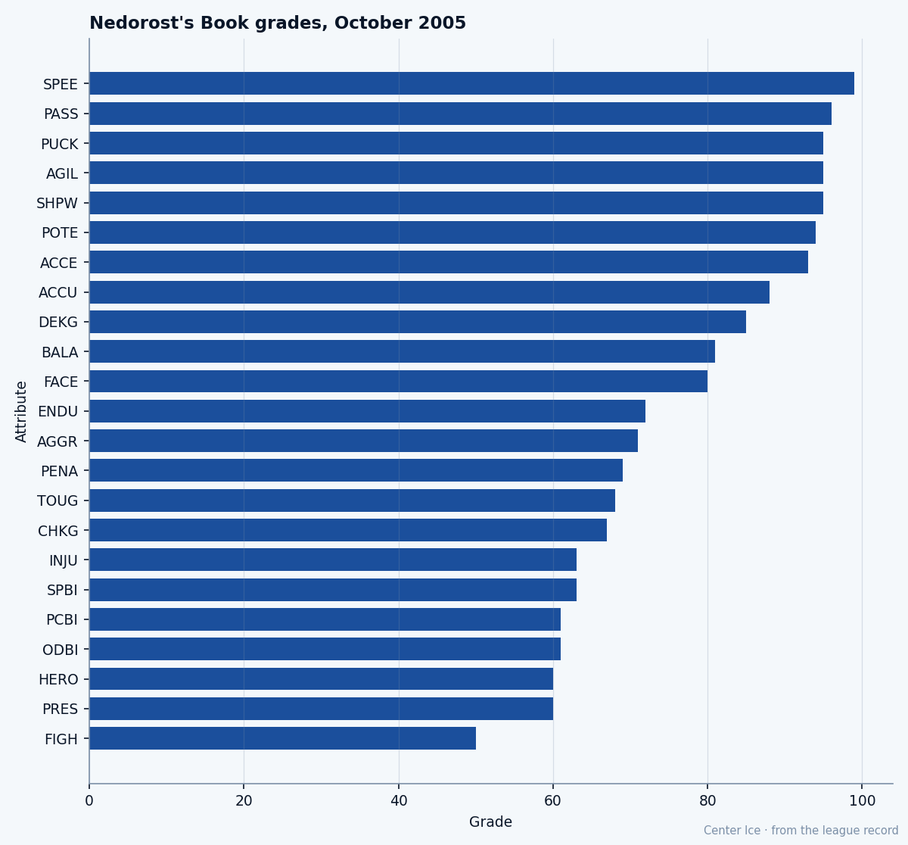

+12 on the Index, 0 Years on the Contract: Vaclav Nedorost at 23
The league's biggest riser has Speed 99, a Fighting grade of 50, and a deal that ended in September
 Tomáš VránaProfile writer · The Sweater
Tomáš VránaProfile writer · The SweaterThe piece
 Vaclav Nedorost83 went from the 14th pick of the 2000 draft to 67 NHL games in two seasons with
Vaclav Nedorost83 went from the 14th pick of the 2000 draft to 67 NHL games in two seasons with  Colorado Avalanche, and then got traded on July 19, 2003 for a 2nd-round pick and a prospect. He was 21 years old. Colorado wanted a defenseman. Florida got a center.
Colorado Avalanche, and then got traded on July 19, 2003 for a 2nd-round pick and a prospect. He was 21 years old. Colorado wanted a defenseman. Florida got a center.
He is 23 now. The Bureau's Development Index has him at +12, the largest single jump in the league this week. Base grade 75, overall today 80. His potential sits at 94, which means the Bureau still believes 14 grades are left in him. The contract on file carries $1.00M and 0 years of term. It ended in September.
He has been with  Florida Panthers since before the record opened on December 1, 2004. The transactions say how he got here from Colorado, but the Panthers have had him longer than the data can see.
Florida Panthers since before the record opened on December 1, 2004. The transactions say how he got here from Colorado, but the Panthers have had him longer than the data can see.
The minutes doubled and the points did not
13.4 minutes a night in 2003-04, 22.4 this season. 25 points in 69 games last year, 1 goal and 9 points in 18 games so far in 2004-05. More ice, fewer points. The Index says the play is better than the production, and the +12 is the Bureau's way of publishing that gap.
Morale 100. He shoots left, stands 73 inches, weighs 190 pounds. Five playoff games in 2003-04 after returning from a leg injury that kept him out from around March 9 to April 24. The return date landed 1 week before Florida's season was over, and he collected 3 points in those 5 games.
What 99 looks like next to 50
Speed 99. Passing 96. Puck Control 95, Agility 95, Shot Power 95, Acceleration 93. The top six attributes on Nedorost's Book are all 93 or higher. He can get there faster than almost anyone, pass at a grade only a handful of players hold, and handle the puck at a level the Bureau has set at 95.
The bottom of the sheet is a different player. Fighting 50. Presencing 60, Hockey IQ at 60. Defensive positioning 61 on the penalty kill and 61 at even strength. Injury Resistance 63. The man who can outrun you cannot outmuscle you, reads the game defensively like a man who has not yet learned to, and takes 13 penalty minutes in 18 games while grading 50 in Fighting.

The gap between those two clusters is 49 grades, from Speed 99 to Fighting 50. The overall of 80, which is the base of 75 plus 12 on the Index, sits roughly in the middle of them, pulled up by the offense and pulled down by everything on the defensive and physical side of the sheet.
A room that scores 37 in 18
Florida is 5 wins, 8 losses, 3 overtime losses, 17 points through 18 games. The Panthers have scored 37 goals and allowed 46. At home they are 5-3; on the road, 2-8. That gap is 8 points of goal differential spread over 18 games, a team that is competitive in its own building and outmatched everywhere else.
The roster around him carries  Olli Jokinen84 at 81 overall,
Olli Jokinen84 at 81 overall,  Jay Bouwmeester82 at 79, and
Jay Bouwmeester82 at 79, and  Viktor Kozlov80 at 77.
Viktor Kozlov80 at 77.  David Aebischer86 in net carries an 83. Nedorost's current overall of 80 makes him the third-highest-rated player on the club today, above Kozlov and just below Jokinen.
David Aebischer86 in net carries an 83. Nedorost's current overall of 80 makes him the third-highest-rated player on the club today, above Kozlov and just below Jokinen.
A 23-year-old center, the second-highest scorer's skill set on a roster, playing 22.4 minutes on a team that wins at home and loses everywhere else, with a contract that has no term past this season. The room he plays in would not look like a place where a man has a reason to leave.
The road from Ceske Budejovice
Colorado took him 14th overall in 2000 out of HC České Budějovice of the Czech Extraliga. He spent 2001-02 between the Hershey Bears of the AHL and 25 games with the Avalanche, scoring 2 goals and adding 2 assists at 19 years old. The next season, 42 more games in Denver. Then the trade.
The Avalanche got Peter Worrell and a 2nd-round selection. They wanted defense. Florida got a center with Speed 99 and a Fighting grade of 50 who, four years and one country after the draft, now sits 12 grades above his base on the Bureau's Index and 14 below his ceiling.
The +12 will not hold through December if the production stays where it is. The contract will not hold through the spring either way. The Bureau has him at 80 today on a team with 17 points, and 94 on a sheet that says 14 more grades are in him. The only number that does not change is the Speed 99, which the desk will find at the top of his card in every edition from here to retirement.